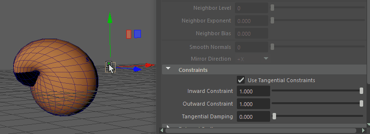

- 在“建模”(Modeling)、“绑定”(Rigging)和“动画”(Animation)菜单集中：“变形 > (创建)变形”(Deform > (Create) Morph) >

本主题介绍了“变形选项”(Morph Options)窗口中的选项。有关使用“变形”(Morph)变形器的信息，请参见创建变形变形器(Create a Morph Deformer)。
“基本”(Basic)选项卡
- 变形模式(Morph Mode)
- 设置变形目标对象修改几何体的方式。
变形模式：A. 变形之前，B.绝对(Absolute)，C.相对(Relative)，D.曲面(Surface)，E.重定目标(Retarget)，F.镜像(Mirror)
-
设置 行为 在上图中，(A) 显示了应用变形变形器之前的几何体。 绝对(Absolute) (B) 获取变形对象的精确值。 相对(Relative) (C) 用于修改相对于其当前值的变形。 曲面(Surface) (D) 匹配曲面变形。 注： 如果变形与源形状有很大不同，则变形可能会撕裂几何体。如果发生这种情况，请激活“相邻”(Neighbor)设置以调整目标与源位置匹配的程度。请参见本主题末尾的“属性编辑器”(Attribute Editor)部分中的“相邻”(Neighbor)设置。重定位(Retarget) (E) 用于将动画从一个曲面复制到另一个曲面。(请参见使用变形变形器重定动画目标(Retarget animation with the Morph Deformer)) 镜像(Mirror) (F) 用于在指定轴上反射曲面变形。(请参见使用变形变形器镜像几何体(Mirror Geometry with the Morph deformer)) - 变形空间(Morph Space)
-
使用“变形空间”(Morph Space)设置定义进行变形的空间上下文。
设置 行为 对象空间(Object Space) 在目标对象自己的空间上下文中将源变形应用于目标对象。 世界空间(World Space) 在源对象空间上下文中将源变形应用于目标对象，即目标对象移动以占据与源对象相同的位置。 - 使用原始变形目标(Use Original Morph Target)
- 仅当您选择“相对”(Relative)变形模式时，此选项才处于活动状态。
- 使用组件查找(Use Component Lookup)
- 从源对象几何体派生变形。
- 激活此选项可在节点编辑器(Node Editor)中自动生成 componentMatch 节点作为组件查找表，使您可以在源组件和目标组件上的顶点索引之间创建复杂的相关性，而不管它们在索引表中的位置如何。请参见使用 componentMatch 节点创建顶点查找表。
- 如果仍要创建自己的顶点查找表并手动连接它们，请勿激活“使用组件查找”(Use Component Lookup)。
- “组件匹配”(Component Match)选项卡
- 在“属性编辑器”(Attribute Editor)的“变形”(Morph)选项卡中选择“使用组件查找”(Use Component Lookup)时，将创建“组件匹配”(Component Match)节点，用于创建顶点查找表。请参见 componentMatch 节点和使用 componentMatch 节点创建顶点查找表。
“高级”(Advanced)选项卡
- 变形顺序(Deformation Order)
-
指定在可变形对象的历史中变形器节点的放置。有关变形器放置的详细信息，请参见“高级”(Advanced)变形器选项。
- 排除(Exclusive)
-
指定变形器集是否位于某个划分中。划分中的集不能有重叠的成员。如果启用该选项，“要使用的划分”(Partition To Use)和“新划分名称”(New Partition Name)选项将变为可用。默认设置为禁用。
- 要使用的划分(Partition To Use)
-
列出所有现有划分和默认选择“创建新划分”(Create New Partition)。如果选择“创建新划分”(Create New Partition)，可以编辑“新划分名称”(New Partition Name)字段以指定新划分的名称。只有当“排除”(Exclusive)处于启用状态时才可以使用。
- 划分名称(Partition Name)
-
指定将包括变形器集的新划分的名称。建议的划分名称为 deformPartition，如果尚不存在，则将创建该名称。通常，可能会将所有排除式变形器集置于名为 deformPartition 的划分中。但是，可以根据需要创建多个划分并为这些划分命名。只有当“排除”(Exclusive)处于启用状态时才可以使用。
属性编辑器(Attribute Editor)
相邻选项(Neighbor options)
- 相邻级别(Neighbor level)
- 用于设置在平滑锯齿边时算法要考虑顶点旁边的多少个组件。
- 相邻指数(Neighbor Exponent)
- 用于对“相邻级别”(Neighbor Level)的效果和对相邻顶点的影响进行加权。设置为 0 时，距离没有任何效果。值越高，附近顶点就越重要。如果几何体“撕裂”，请使用此设置，如上例所示。
- 相邻偏移(Neighbor Bias)
- 用于添加向每个距离添加的固定量，以便接近零的顶点距离不会主导变形。
- 平滑法线(Smooth Normals)
- 过滤几何体的突然变化。使用此设置可生成更柔和的外观结果。
- 镜像方向(Mirror Direction)
- 为选定几何体选择反射轴。（此选项仅适用于“镜像”(Mirror)“变形模式”(Morph Mode)。）
- 请参见使用变形变形器镜像几何体(Mirror Geometry with the Morph deformer)。
约束(Constraints)
使用“切向”(Tangential)约束创建平滑的滑动变形效果。请参见使用变形变形器创建滑动效果(Create a sliding effect with the Morph Deformer)。
- 向内约束(Inward Constraint)/向外约束(Outward Constraint)
- “向内约束”(Inward Constraint)和“向外约束”(Outward Constraint)属性限制变形曲面上的顶点运动。“向内约束”(Inward Constraint)会阻止顶点向曲面内部移动，而“向外约束”(Outward Constraint)会阻止顶点向曲面外部移动以保留当前几何体轮廓。
- 切向阻尼(Tangential Damping)
-

- “切向阻尼”(Tangential Damping)滑块可用于在“向内约束”(Inward Constraint)和“向外约束”(Outward Constraint)设置之间存在较大差异时，控制变形器将几何体绘制回其输入变形形状的效果。
重定目标缩放(Retarget Scaling)
使用“重定目标缩放”(Retarget Scaling)调整重定目标效果的大小。
请参见使用变形变形器重定几何体目标(Retarget Geometry with the Morph Deformer)。
- 缩放封套(Scale Envelope)
- 指定变形比例因子。值为 0 时不提供变形，值为 0.5 时提供一个缩放成完整效果一半的变形效果，同时值为 1 时提供完整的变形效果。
- 缩放级别(Scale Level)
- 此滑块控制下面的所有四个设置，允许您调整要应用效果的深度。
- 均匀缩放权重(Uniform Scale Weight)
- 此滑块使用周围顶点的整体比例来确定源对象和目标对象之间的大小差异。
- 而非均匀缩放会在切向平面中将其分成不同的比例。例如，如果源上的方形多边形的大小为 1 x 1，目标上的矩形的大小为 2 x 4，则均匀缩放会将其解释为按 3 缩放，非均匀缩放会将其解释为在一个方向按 2 缩放，在另一个方向按 4 缩放。
- 如果将“均匀缩放权重”(Uniform Scale Weight)设置为 1.0，则会使用完全均匀缩放解释；如果将其设置为 0.0，则会使用非均匀缩放解释。
- 法线比例(Normal Scale)
- 此设置允许您沿法线方向调整重定目标效果。当重定大小不同的对象的目标时，此设置非常有用。
- 在上例中，当从较小的目标对象重定目标到较大的源对象时，由于无论其大小如何，两个对象的变形距离都相同，因此对目标对象所做的更改在较大的曲面上可能不明显。调整“法线比例”(Normal Scale)设置以进行补偿。
- 切线平面比例(Tangent Plane Scale)
- 为源对象提供全局的整体缩放效果。